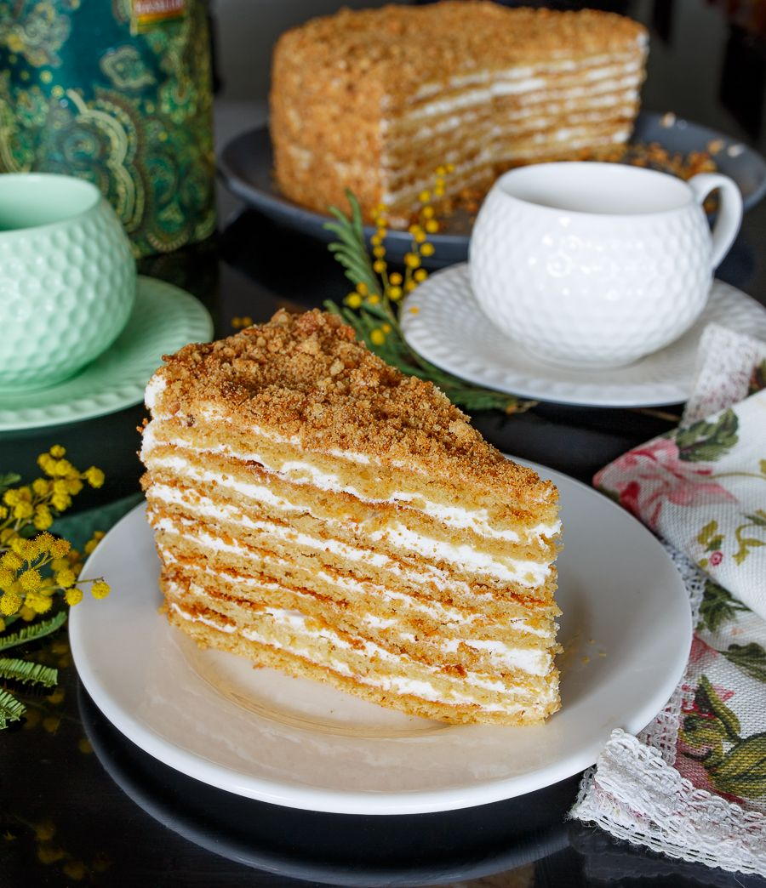

Торт "Медовик"
Категория: Торты и пирожные
Цена: 2 500 ₽
Торт "Медовик" — классический русский торт с нежным тестом и медовой начинкой.

Характеристики
| Энергетическая ценность на 100 г | |
|---|---|
| Белки | 8.1 |
| Жиры | 11.3 |
| Углеводы | 31.3 |
| Килокалории | 496 |
Состав:
Сахар, мука пшеничная в/с, соль, масло сливочное 82.5%, яйцо куриное, сок лайма, сметана 20%, сода пищевая, мёд цветочный Внимание, продукт содержит: глютен, лактозу, молоко, пшеницу, яйца.
Преимущества
- Мы делаем десерты только из 100% натуральных продуктов
- Торт приготовлен с любовью и заботой о здоровье
- Торт вкусный